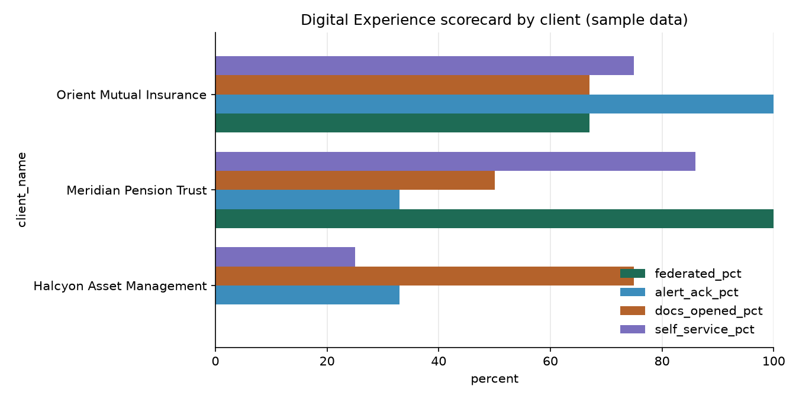
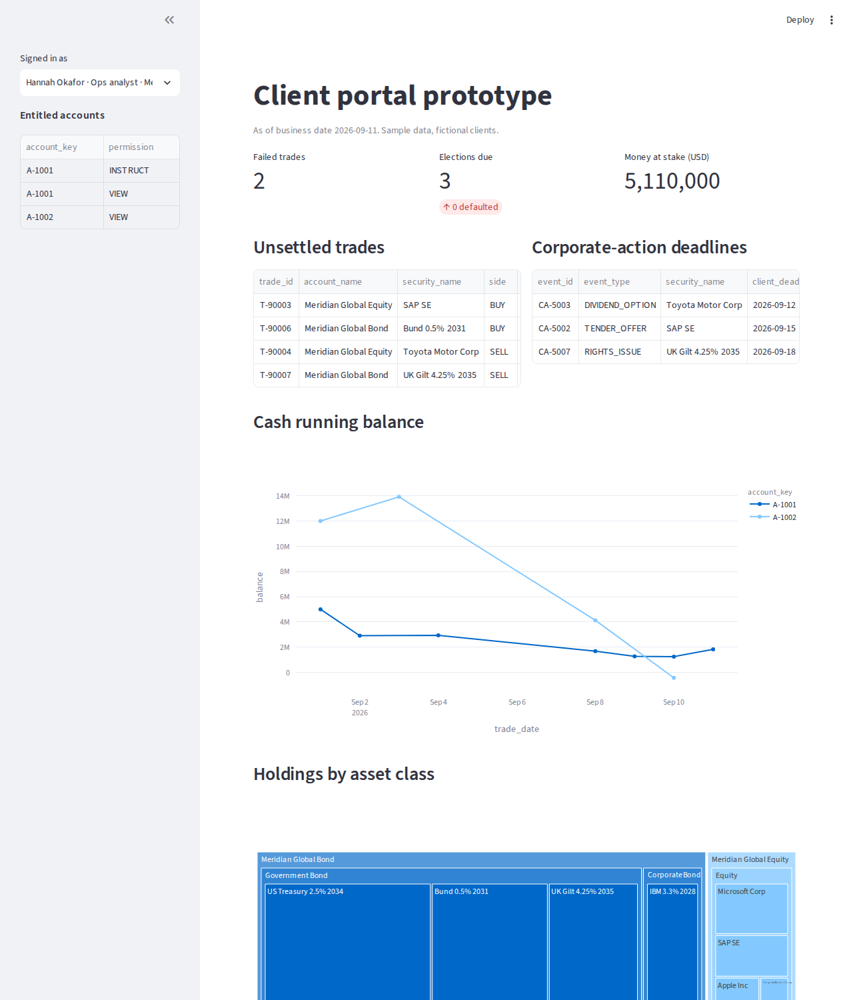
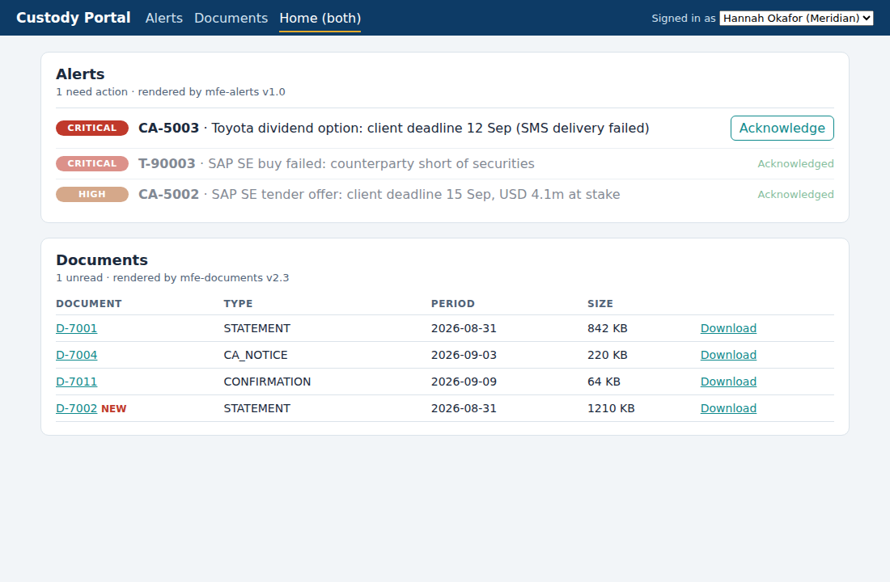

What you are building
A miniature of the data platform behind a custodian's client portal. The client names are fictional. The shapes of the data, the tools and the problems are real.
Words you will meet, in plain language
How to read each phase. Every step has the same four parts: Do (the clicks or commands), Screen (what it looks like), Plain words (what just happened and why the bank cares), and If it fails (the usual cause). Screens marked real are screenshots of the project running; screens marked recreated are drawn from the tool's layout and may differ in small details from the current version of the product.
Workstation and local database
Everything starts on your laptop. By the end of this phase the custody data exists as a database you can open, and you have run a query and seen a result grid.
1.1 Install Python
- Go to python.org, Downloads, and download the installer for your operating system. Any 3.11 or 3.12 version is fine.
- Windows: run it. On the first screen tick Add python.exe to PATH before clicking Install Now. This is the step people miss; without it the terminal cannot find Python.
- macOS: run the .pkg installer, or in Terminal type
brew install pythonif you have Homebrew. - Open a new terminal and type
python3 --version(Windows:py --version). You should see a version number.
Includes IDLE, pip and documentation. Creates shortcuts and file associations.
Windows installer, first screen recreated
Python is the language every data team prototypes in. "PATH" is the list of folders the terminal searches when you type a command; adding Python to it means typing python3 works from anywhere.
"python is not recognized": you skipped the PATH tick. Re-run the installer, choose Modify, and tick it. Or use py instead of python3 on Windows.
1.2 Get the project files
Install Git from git-scm.com (defaults are fine), then in a terminal:
git clone -b claude/amazing-darwin-l6c0mg https://github.com/rishabh071106-eng/ai-academy.git cd ai-academy/state-street-day-zero python3 sql-lab/run_sqlite.py 5
No Git? On the GitHub page for the folder choose Code, Download ZIP, unzip, and open a terminal in the unzipped folder.
Terminal output of the exceptions query real
You just built a database from two text files (the table definitions and the data) and ran the query that powers a portal's "what needs attention" screen. Three trades failed to settle, each for a different reason, and each reason has a different owner: the other bank, the client's own cash, and a settlement-instruction mismatch that is probably the custodian's own reference data.
"No such file": you are not in the right folder; type cd to the project folder first. Windows: use py in place of python3.
1.3 A proper SQL client: DBeaver
- Download DBeaver Community from dbeaver.io and install it.
- Database menu, New Database Connection, choose SQLite, Next.
- Path: click Open and choose
sql-lab/custody_lab.dbinside your project folder. Click Test Connection; accept the driver download when asked. Finish. - In the left tree expand the connection, Tables, and double-click
fact_tradesto see rows. Then SQL Editor menu, New SQL script, paste Q5 fromqueries.sql, press Ctrl+Enter.
DBeaver connection dialog, shown for the PostgreSQL route; for SQLite the only field is the file path recreated
| trade_id | account_name | security_name | status | fail_reason |
|---|---|---|---|---|
| T-90003 | Meridian Global Equity | SAP SE | FAILED | COUNTERPARTY_INSUFFICIENT_SECURITIES |
| T-90006 | Meridian Global Bond | Bund 0.5% 2031 | FAILED | INSUFFICIENT_CASH_EUR |
| T-90011 | Orient General Account | Toyota Motor Corp | FAILED | SSI_MISMATCH |
| T-90009 | Halcyon US Large Cap ETF | Microsoft Corp | PENDING | [NULL] |
| T-90012 | Orient General Account | US Treasury 2.5% 2034 | PENDING | [NULL] |
DBeaver SQL editor with the result grid; the three failed rows are what a portal shows first recreated
DBeaver is the window analysts use to look inside any database. The left tree is the building directory: connection, database, tables. The editor is where you ask questions; the grid is the answer. The Export button turns any grid into Excel, which is how most "can you send me the data" requests are actually fulfilled.
Driver download blocked by a corporate proxy: on a personal laptop use home Wi-Fi. Table list empty: you connected before running run_sqlite.py; run it and press F5 in DBeaver.
1.4 Optional: a real PostgreSQL server
Docker Desktop from docker.com, then in the sql-lab folder:
docker compose up -d
docker compose exec postgres psql -U lab -d custody_lab -c "SELECT COUNT(*) FROM fact_positions;" # 90Then repeat 1.3 with the PostgreSQL connection shown in the dialog above: host localhost, port 5432, database custody_lab, user lab, password lab.
SQLite is a database in a file; PostgreSQL is a database server, which is what real systems use. Docker runs the server in a box on your laptop with the data already loaded, and removes it cleanly with docker compose down -v.
Snowflake account and setup
Snowflake is the cloud data warehouse the job description names. In this phase you get an account, learn the one screen you will use for everything, and run the setup script that creates your role, compute, storage and a cost guard rail.
2.1 Create the trial account
- Open signup.snowflake.com. Fill in name, work or personal email, company (anything), role.
- Edition: Standard. Cloud provider: Amazon Web Services. Region: the one nearest you. Write the region down; you will pick the same one in AWS in Phase 3.
- Click Get Started. Open the activation email, set a username and password. You land in Snowsight, the web interface.
Snowflake trial sign-up, second screen recreated
Snowflake does not own data centres. It rents them from AWS, Azure or Google and runs on top. Choosing AWS and a region means your Snowflake account physically lives in Amazon's Mumbai (or wherever) data centre, which is why the S3 bucket in Phase 3 should be in the same place. The 400 dollars is a usage allowance, not a charge; this whole project uses a few dollars of it.
No activation email: check spam, or the company field was rejected (use any real-looking name). Already have an account with that email: sign in at app.snowflake.com instead.
2.2 Learn the Snowsight screen
Snowsight home. Left navigation: Worksheets is where SQL runs; Databases shows tables; Admin holds warehouses, cost and users recreated
Six things on that left bar matter for this project. Worksheets: where you type and run SQL. Databases: browse tables. Private Sharing: give another account access. Query History: every query anyone ran, with cost. Warehouses: the compute clusters and whether they are running. Cost Management: the bill. The bottom-left shows who you are and which role you are acting as; you will change that role in Phase 4.
2.3 Run the setup script
- Click + SQL Worksheet. A blank editor opens with a role and warehouse selector at the top right.
- Open
snowflake/01_setup.sqlfrom the project on your laptop, copy all of it, paste into the worksheet. - Click the small arrow next to the ▶ Run button and choose Run All. Each statement runs in order; the results pane shows the last one.
- Rename the worksheet (click its name tab) to "01 setup" so you can find it again.
| ROLE | WAREHOUSE | DB | SCHEMA |
|---|---|---|---|
| DX_ENGINEER | LAB_WH | CUSTODY_LAB | CORE |
The setup worksheet after Run All. The object tree on the left now shows CUSTODY_LAB with three schemas recreated
Fourteen statements did five things:
- A role called DX_ENGINEER. You will work as this role, not as the all-powerful ACCOUNTADMIN. In a bank nobody works as admin; it is the first thing an auditor checks.
- A warehouse called LAB_WH, the smallest size, that turns itself off after a minute of silence. This is the habit that keeps cloud bills small.
- A database with three schemas. RAW is where files land untouched. CORE is the cleaned, modelled tables. MART is what clients and dashboards read. Keeping them apart is the difference between a platform and a swamp.
- Grants, the permissions that let DX_ENGINEER use the warehouse and the database.
- A resource monitor that suspends the warehouse if the lab ever burns more than twenty credits in a month. A guard rail you set before you need it.
"Insufficient privileges": the role selector at the top right is not ACCOUNTADMIN; change it and rerun. "Object already exists": harmless, the script uses IF NOT EXISTS. "SQL compilation error at line N": you pasted only part of the file; select all and paste again.
2.4 See what you created
Left bar, Admin, Warehouses. You should see LAB_WH, size X-Small, status Suspended, auto-suspend 1 minute. Click it to see the "Started" and "Suspended" events. Then Admin, Cost Management, which will show a near-zero number.
| Name | Status | Size | Clusters | Auto suspend | Auto resume | Resource monitor | Owner |
|---|---|---|---|---|---|---|---|
| LAB_WH | ● Suspended | X-Small | 1 | 1 minute | Yes | LAB_MONITOR | ACCOUNTADMIN |
| COMPUTE_WH | ● Suspended | X-Small | 1 | 10 minutes | Yes | — | ACCOUNTADMIN |
Admin › Warehouses after setup recreated
"Suspended" is good. It means nothing is being billed. The moment you run a query the warehouse resumes in under a second, does the work, and suspends a minute later. On this screen, a VP looks for exactly one thing on a real estate: any warehouse whose auto suspend is long or "never".
Load data, then load from S3
Two ways to get the custody data into Snowflake. The quick way takes three minutes and is fine for a lab. The S3 way is how a bank's pipeline actually works: files land in a bucket and the warehouse pulls them in.
3.1 The quick way: paste and run
- New SQL Worksheet, name it "02 load". Top right: role DX_ENGINEER, warehouse LAB_WH.
- Paste the first lines of
snowflake/02_load.sql(the USE statements), then paste all ofsql-lab/schema.sqlbelow them. Run All. Fifteen tables appear under CUSTODY_LAB, CORE in the tree. - Clear the editor, paste the USE lines again, then all of
sql-lab/seed.sql(293 INSERT statements). Run All. About twenty seconds. - Paste and run the count check from the file.
| T | N |
|---|---|
| dim_client | 3 |
| fact_positions | 90 |
| fact_trades | 12 |
| fact_alerts | 25 |
| fact_report_runs | 34 |
Count check after the load; the tree shows fifteen tables in CORE recreated
The same two text files that built your laptop database built the cloud one. That is the point of portable SQL: the definitions are the asset, the engine is interchangeable. The counts are your first data-quality check; if positions is not 90, something was skipped.
"Table does not exist" during the seed: schema.sql did not run fully; check the tree has 15 tables. Statement limit warning: Snowsight caps very large pastes; paste the seed in two halves.
3.2 The real way: a bucket in Amazon S3
- On your laptop:
python3 sql-lab/export_csv.py. This writes fifteen CSV files into folders undersql-lab/csv/, one folder per table. - aws.amazon.com, Create an AWS Account (email, password, card for identity, Basic support which is free). Sign in to the console.
- Top right, set the region to the same one as Snowflake. Search bar, S3, Create bucket.
- Bucket name must be unique across all of AWS:
custody-lab-yourname-2026. Leave "Block all public access" ticked. Create bucket. - Open the bucket, Upload, Add folder, choose the
csvfolder, Upload. Folders keep their names.
| Name | Type | Last modified | Size | |
|---|---|---|---|---|
| ☐ | 📁 accounts/ | Folder | — | — |
| ☐ | 📁 alerts/ | Folder | — | — |
| ☐ | 📁 clients/ | Folder | — | — |
| ☐ | 📁 positions/ | Folder | — | — |
| ☐ | 📁 trades/ | Folder | — | — |
| ☐ | 📁 … 10 more folders | Folder | — | — |
The S3 bucket after uploading the csv folder; one sub-folder per table recreated
S3 is the filing cabinet of the cloud. Almost every feed between a bank and its vendors is "a file lands in a bucket". The folder-per-table layout matters because Snowflake (and Athena, and most tools) load a folder, not a file, so tomorrow's file can drop into the same folder and be picked up by the same command.
"Bucket name already exists": someone else in the world has it; add more characters. Region mismatch: check the top-right region selector before creating.
3.3 An access key so Snowflake can read the bucket
- Search bar, IAM, Users, Create user. Name:
snowflake-reader. Do not tick console access. Next. - Permissions: Attach policies directly, search
AmazonS3ReadOnlyAccess, tick it. Next, Create user. - Open the user, Security credentials tab, Create access key. Use case: "Third-party service". Tick the confirmation. Create.
- You see an Access key ID and a Secret access key. Copy both now into a private note; the secret is shown once only.
IAM access key screen; the secret is visible once recreated
IAM is AWS's identity system: users, groups, roles and policies. You made a "user" that is not a person, gave it one ability (read files), and issued it a key pair. Snowflake will present that key to read your bucket. Least privilege, one purpose, revocable in one click: that is the model your bank's security team will insist on, and this is the smallest example of it.
Lost the secret: delete the key and create a new one. Never paste keys into a file you commit to git; the step file has placeholders on purpose.
3.4 Stage and COPY INTO
- New worksheet "03 s3 stage". Paste
snowflake/03_s3_stage.sql. Replace the bucket name and the two key placeholders. - Run the FILE FORMAT and STAGE statements, then
LIST @LAB_S3;on its own. You should see fifteen files. - Run the rest: the TRUNCATEs empty the tables, the COPY INTO statements reload them from the bucket. Each COPY returns one row per file with status LOADED.
| file | status | rows_parsed | rows_loaded | error_limit | errors_seen | first_error |
|---|---|---|---|---|---|---|
| s3://custody-lab-rishabh-2026/positions/fact_positions.csv | LOADED | 90 | 90 | 1 | 0 | NULL |
One COPY INTO result: the file, LOADED, 90 rows parsed and loaded, zero errors recreated
A stage is a named pointer to your bucket plus the credentials to read it. COPY INTO is the load command: read every file in that folder, parse it with the file format, insert the rows, and report per file. Snowflake remembers which files it has loaded, so running COPY INTO again tomorrow loads only the new file. That memory is what turns a command into a pipeline.
LIST returns an error: wrong bucket name, wrong key, or the bucket is in a different region than you think. "Number of columns in file does not match": a CSV was edited in Excel and saved with extra columns; re-run export_csv.py and re-upload.
Marts, secure views, sharing
Tables are not products. This phase turns the CORE tables into three client-facing things: a scorecard mart, a view that shows each client only its own rows, and a share that would let a client query it live from their own account.
4.1 The scorecard mart
New worksheet "04 marts". Paste snowflake/04_marts_and_sharing.sql. Run section 4a: the CREATE TABLE and the SELECT.
| CLIENT_KEY | CLIENT_NAME | ACTIVE_USERS | ACTIONABLE_ALERT_ACK_PCT | DOCS_OPENED_PCT | SELF_SERVICE_PCT | REFRESHED_AT |
|---|---|---|---|---|---|---|
| C-HALCYON | Halcyon Asset Management | 3 | 33 | 75 | 25 | 2026-09-14 09:12:41 |
| C-MERIDIAN | Meridian Pension Trust | 4 | 33 | 50 | 86 | 2026-09-14 09:12:41 |
| C-ORIENT | Orient Mutual Insurance | 3 | 100 | 67 | 75 | 2026-09-14 09:12:41 |
The DX scorecard mart: one row per client, four capability metrics, and when it was refreshed recreated
This one table is the JD's "outcomes" section as numbers: acknowledgement rate for alerts, documents opened, self-service ratio, active users. It has a refresh timestamp because a number without its as-of time starts arguments. Everything downstream (Sigma, Tableau, the portal tile) reads this table and therefore agrees.
4.2 Entitlements in the data: the secure view
- Run section 4b: the ROLE_CLIENT_MAP table and the secure view.
- Run section 4c as ACCOUNTADMIN: it creates a role CLIENT_HALCYON with access to the view only.
- Change the role selector at the top right of the worksheet to CLIENT_HALCYON and run the final SELECT. Only Halcyon's accounts appear.
- Still as CLIENT_HALCYON, try
SELECT * FROM CUSTODY_LAB.CORE.FACT_POSITIONS;. It is refused.
| CLIENT_KEY | ACCOUNT_NAME | ROWS_VISIBLE | MV |
|---|---|---|---|
| C-HALCYON | Halcyon US Large Cap ETF | 2 | 193,507,478.00 |
| C-HALCYON | Halcyon Income Fund | 3 | 263,550,635.60 |
Same worksheet, role switched to CLIENT_HALCYON: the view shows two accounts; the underlying table is invisible recreated
The view contains a WHERE clause that asks "which client does the current role belong to" and filters accordingly. The client role was never given access to the raw tables. So even if someone writes a clever query, there is nothing to leak: the entitlement is enforced where the data lives, not in a screen that can be bypassed. This is the single most important sentence in the JD's IAM line, and you have just demonstrated it.
The client role sees no rows: the ROLE_CLIENT_MAP insert did not run, or the role name is misspelled. Cannot switch role: the GRANT ROLE ... TO USER line ran as the wrong role; rerun 4c as ACCOUNTADMIN.
4.3 Sharing with a client account
Run section 4d as ACCOUNTADMIN. It creates a share containing only the secure view. To actually connect it to a client you would need their account locator; if you want to see the receiving side, make a second trial account and add its locator. Otherwise look at the share in Data, Private Sharing, Shared by my account.
The share, waiting for a consumer account recreated
Today most custodians send clients a file every night over SFTP. The client writes code to load it, it breaks when a column changes, and "did you get the file" is a daily ticket. A share replaces all of that: the client points their own tools at your view and always sees the current data, filtered to them, with nothing copied. It is a premium product idea; not every client has Snowflake, so the file stays alongside. Being able to explain this in a client meeting is worth the whole phase.
4.4 Two features for incident reviews
Run section 4e: a Time Travel query and a zero-copy clone.
SELECT COUNT(*) FROM CORE.fact_positions AT (OFFSET => -60*10); -- the table as it was 10 minutes ago CREATE OR REPLACE TABLE CORE.fact_positions_test CLONE CORE.fact_positions; -- full-size copy, instantly, no extra storage
Time Travel lets you ask "what did the client's number look like on Tuesday" exactly, which ends the argument in a dispute. Cloning gives your engineers a full-size test copy of production in seconds, which ends the excuse "we tested on a small sample". Both exist because Snowflake never overwrites files, only adds new ones.
Python: analysis, write-back, prototype
Python is where the numbers SQL cannot easily produce get made, where results go back into the warehouse, and where a working prototype gets built before a designer draws anything.
5.1 The environment
cd python-lab
python3 -m venv .venv
source .venv/bin/activate # Windows PowerShell: .venv\Scripts\Activate.ps1
pip install pandas matplotlib streamlit plotly "snowflake-connector-python[pandas]"A virtual environment is a private folder of Python packages for this one project, so installing something here cannot break anything else on your laptop. "pip" is Python's app store. The prompt shows (.venv) when it is active.
5.2 Analysis that SQL cannot do neatly
python3 analyze.py
Terminal output of analyze.py, abridged real

The chart the script saves real
Half of critical alerts get acknowledged, and when they do it takes over an hour at the median and eleven hours at the ninetieth percentile. Email is acknowledged one time in five; the portal one time in two; the one machine-to-machine webhook instantly. This is the paragraph you would put in front of the Digital Experience Lead in week two, and it came from forty lines of pandas.
"No module named pandas": the virtual environment is not active, or pip install did not finish. Run the activate line again and reinstall.
5.3 Write the result back into Snowflake
Find your account identifier: Snowsight, bottom-left account menu, Account, hover the account name, copy the identifier (looks like ABCDEFG-XY12345). Then:
export SNOWFLAKE_ACCOUNT=ABCDEFG-XY12345 # Windows PowerShell: $env:SNOWFLAKE_ACCOUNT="ABCDEFG-XY12345"
export SNOWFLAKE_USER=rishabh
export SNOWFLAKE_PASSWORD='your password'
python3 to_snowflake.pyExpected output: the pandas scorecard, the write, and a read-back comparing the SQL mart with the Python one. Values match. expected
This closes the loop. Analysis done on a laptop became a table in the governed platform, next to the SQL version, and the two agree. In a real team this script would run on a schedule and the mart would be what everyone reads. The comparison line is a data-quality control: two independent computations of one metric should match, and when they stop matching you have found a definition drift.
"250001: Could not connect": the account identifier is wrong, usually a region suffix issue; copy it from Snowsight rather than typing it. "Object does not exist": the MART schema was not created; rerun 01_setup.
5.4 A working prototype of the portal
streamlit run dashboard.py # opens http://localhost:8501 in your browserIn the left panel, change "Signed in as" to a different user. Everything below changes because every query is filtered by that user's entitlements.

The prototype running on localhost real
Streamlit turns a Python script into a web page. This one is a portal in miniature, built the custody way: exceptions first (fails, deadlines, money at stake), then cash, then holdings, with a download button. The sidebar is the identity layer from Phase 4 in a different costume: pick a user, and the queries only return accounts that user is entitled to. When you brief a design team, this is what you show them, and the conversation moves from "what should it look like" to "why is this number here".
Port already in use: streamlit run dashboard.py --server.port 8502. Blank page: wait five seconds; it loads data on first run.
Sigma and Tableau on Snowflake
Business users do not write SQL. Sigma and Tableau are how they reach the marts. Sigma lives in the browser and sits directly on Snowflake; Tableau is the desktop tool most banks already own.
6.1 Sigma: connect and build without SQL
- sigmacomputing.com, Start free trial, sign up with the same email. Sigma is entirely in the browser.
- Administration (gear icon), Connections, Create connection, type Snowflake. Name: Custody lab. Account: your account identifier. Warehouse: LAB_WH. User and password: yours. Role: DX_ENGINEER. Test, Create.
- Home, Create new, Workbook. Left panel: Add new element, Table, Tables and datasets, browse Custody lab, CUSTODY_LAB, CORE, FACT_ALERTS. Select.
- In the element panel, Groupings: drag ALERT_TYPE then SEVERITY into Group by. Add a calculation column named Acknowledged with formula
IsNotNull([ACKNOWLEDGED_AT]). Add Count of ALERT_ID and Sum of Acknowledged. - Save as "DX alerts". Then click the element's menu, Show SQL, and read the query Sigma wrote.
| ALERT_TYPE | SEVERITY | Count of ALERT_ID | Sum of Acknowledged | Ack rate |
|---|---|---|---|---|
| ▾ CA_DEADLINE | CRITICAL | 2 | 0 | 0% |
| HIGH | 7 | 2 | 29% | |
| ▾ SETTLEMENT_FAIL | CRITICAL | 5 | 3 | 60% |
| HIGH | 1 | 1 | 100% | |
| ▾ NAV_DELAY | HIGH | 2 | 1 | 50% |
| ▾ DOC_AVAILABLE | INFO | 5 | 3 | 60% |
A Sigma workbook grouped by alert type and severity, reproducing query Q16 with no SQL typed recreated
Sigma looks like a spreadsheet but every cell is a live query against Snowflake; nothing is downloaded. An operations manager can group, filter and add a column, and you can press Show SQL to see exactly what they did. That is governed self-service: freedom for the user, auditability for you, and one source of truth underneath. The "Acknowledged" formula is a definition; in Phase 7 it goes in the glossary so the portal and this workbook cannot drift apart.
Connection test fails: the DX_ENGINEER role has no USAGE on the warehouse, or the account identifier is missing its organisation prefix. Tables not visible: the role lacks SELECT; rerun the grants in 01_setup as ACCOUNTADMIN.
6.2 Tableau: connect to Snowflake and build the fails board
- Tableau Desktop trial from tableau.com (Tableau Public cannot connect to Snowflake; use it with the CSVs from
tableau/export_flat.pyinstead, followingtableau/BUILD.md). - Connect, To a Server, Snowflake. Server:
<account identifier>.snowflakecomputing.com. Role: DX_ENGINEER. Warehouse: LAB_WH. Authentication: username and password. Sign In. It may ask to install the Snowflake driver; accept. - Data source page: Database CUSTODY_LAB, Schema CORE. Drag FACT_TRADES to the canvas, then DIM_ACCOUNT and DIM_SECURITY; Tableau proposes the joins on the key columns. Accept.
- Go to Sheet 1. Drag Account Name to Rows, Status to Columns, Trade Id to the Marks card as Count. Drag Status to Filters and exclude SETTLED. Drag Fail Reason to Colour.
| Account Name | FAILED | PENDING | AFFIRMED | MATCHED |
|---|---|---|---|---|
| Meridian Global Equity | ▇ 1 · counterparty short | ▇ 1 | ||
| Meridian Global Bond | ▇ 1 · insufficient EUR cash | ▇ 1 | ||
| Orient General Account | ▇ 1 · SSI mismatch | ▇ 1 | ||
| Halcyon US Large Cap ETF | ▇ 1 |
Tableau sheet with the shelves set as listed; the fails board from Q5 as a picture recreated
Tableau's model is shelves: put a field on Rows, a field on Columns, a measure on the Marks card, and the chart appears. "Live connection" means every change sends a query to Snowflake and briefly wakes LAB_WH; an "extract" instead copies the data into Tableau on a schedule. The VP question about any Tableau estate is which dashboards are live against client-facing warehouses during the morning rush, and which extracts refresh overnight for nobody.
"Driver not found": install the Snowflake ODBC driver Tableau links to in the error. "Warehouse LAB_WH is suspended": harmless, it resumes on first query; if not, the role lacks USAGE.
Governance the Collibra way
Collibra is the catalogue where a bank records what each term means, who owns it, where the data comes from and whether it passed its quality checks. There is no free download, so you build the same four artefacts by hand and see what the Collibra screen for one of them looks like.
7.1 Run the quality rules
python3 governance/run_dq.py
The data-quality scorecard and its decision real
Thirteen rules, each a question with a yes or no answer, each tagged with one of the six quality dimensions and a severity. One blocking rule failed: a user has access to another client's account. So the platform says hold: do not publish this morning's data to clients until it is fixed. Three warnings passed through with a flag: a late feed, an undelivered text message, grants that never expire. Deciding which rules block and which warn is your decision as the data owner, and you should be able to defend each one.
7.2 What the same thing looks like in Collibra
Open governance/glossary.csv and find the term "Acknowledged alert". In Collibra, that row becomes an asset page like the one below. Sign up at university.collibra.com for the free Fundamentals course, which walks through these screens on a demo environment.
A Collibra business-term asset page built from one glossary row: definition, owner, steward, the column it lives in, where it is used, and its quality status recreated
Everything on that page exists in your governance folder as a CSV row, a diagram or a rule. Collibra's value is that all of it is in one place, linked, searchable, and changes go through an approval workflow: "Propose change" routes to the owner, which is you. When an auditor or a client asks "what does acknowledged mean and who decided", the answer is one click. When an engineer wants to rename the column, the Lineage tab shows the three things that would break.
7.3 The lineage exercise
Open governance/lineage.md. It traces self-service ratio from the reporting platform to the portal tile. Draw the same for acknowledged alert rate, on paper, then answer its question: which upstream change would make the portal and Sigma disagree without anyone noticing?
Lineage is a map of where a number came from. Regulators ask for it (the rule is called BCBS 239); clients ask for it when they dispute a figure; engineers need it before they change anything. Being able to draw it for your own scorecard from memory is what "communicate data concepts clearly" looks like in practice.
The client portal on top
Everything so far is invisible to a client. This phase is what they see: a shell that composes independent widgets, each owned by a different team, reading the marts through APIs.
cd microfrontend-lab
python3 -m http.server 8080 # then open http://localhost:8080/shell/ in your browserChange the signed-in user in the header. Click Acknowledge on an alert. Use the Alerts and Documents links to load one widget at a time. Then open the browser's developer tools (F12), Sources tab, and see that alerts.js and documents.js are separate files with nothing in common except tokens.css.

The composed portal on localhost real
A "micro front-end" estate is a page assembled from pieces that are built, tested and released separately. The header and the user selector are the shell, owned by the platform team. The Alerts box is owned by the notifications team and the Documents box by the documents team; they can ship on different days without touching each other. The shared tokens file is why it still looks like one product. This is the practical answer to "unified client experience across fragmented platforms": you do not rewrite five portals, you put one shell in front and move pages into it one at a time.
How it connects to the rest of the project: in production each widget calls an API that reads a MART view with the caller's entitlements, exactly the secure view from Phase 4. The Streamlit prototype from Phase 5 is what you build first to agree the content; the widgets are what engineering builds properly afterwards.
Blank page: you opened the file directly instead of through the server; modules need http. Port in use: pick another, python3 -m http.server 8081.
Cost, security, clean-up, and the story
A platform you cannot explain the cost and controls of is not finished. This phase reads the bill, checks who can see what, removes what should not be left running, and turns the project into a ninety-second story.
9.1 Read the bill
New worksheet "05 cost", role ACCOUNTADMIN. Paste snowflake/05_cost_and_monitoring.sql and run 5a, 5b and 5c. Then Admin, Cost Management, to see the same in the UI.
| Warehouse | Credits | Queries | Avg queued | Top user |
|---|---|---|---|---|
| LAB_WH | 1.31 | 212 | 0.0s | RISHABH |
| COMPUTE_WH | 0.07 | 4 | 0.0s | RISHABH |
Cost Management after the whole project: under two credits, a few dollars recreated
The entire project cost about one and a half credits because the warehouse slept whenever you were not querying. The experiment in 5e of the file shows the alternative: set auto-suspend to never for an hour and watch a credit vanish for nothing. Scaled to a bank with forty warehouses, that habit is the difference between a controlled bill and a surprise. The 5c query is your platform's own entitlement review: which roles can read which objects, the same question Q15 asks about client users.
9.2 Clean up
- AWS: IAM, Users, snowflake-reader, Security credentials, deactivate and delete the access key, then delete the user. S3, open the bucket, Empty, then Delete. Billing, check the estimated charges page reads zero.
- Snowflake: nothing is billed while suspended, and the trial ends by itself. If you want it tidy:
DROP WAREHOUSE COMPUTE_WH;and drop the test share. - Laptop:
docker compose down -vif you used Docker;deactivateto leave the Python environment.
Nothing here should cost money after you stop. The access key is the one thing to delete on principle: a credential that no longer has a purpose is a liability, which is a sentence you will hear from information security in your first month.
9.3 The story, for someone who will never open Snowflake
Say this aloud. It should take ninety seconds.
"Our clients' data about their own assets sits in our core systems. Every night it lands as files in a secure cloud folder. A warehouse loads those files, checks them against quality rules, and if anything blocking fails we hold the release and tell the client honestly rather than publishing partial numbers. From the clean tables we build a small number of agreed views: what a client holds, what failed, what is due, and a scorecard of how well our digital service is working for them. Each client can only ever see their own rows, and that rule is enforced in the data itself, not in the screen. The same views feed the portal, the dashboards our relationship managers use, and, for clients who want it, a live share into their own systems instead of a nightly file. Every number has a definition, an owner and a traceable path back to its source, so when a client disputes a figure or an auditor asks how it was produced, the answer is one click. And because the compute switches itself off when idle, the whole platform costs a fraction of the old one."
Every sentence in that paragraph is something you built in this project and can show on a screen.
9.4 What to say on Day 1 about all of this
- Do not say "I built a Snowflake platform". Say "I ran a small end-to-end lab to learn how our stack fits together, and I'd like to see how ours differs."
- Ask which of these exist internally and by what names: the raw/core/mart layering, the secure-view entitlement pattern, data-quality gates before publishing, the glossary owner for Digital Experience terms, the cost review.
- Ask to see one real number's lineage, end to end, in your first two weeks.
- Keep this page. Rebuild the project with one real (non-confidential, anonymised) metric from work once you have access, and you will have learned the actual estate.